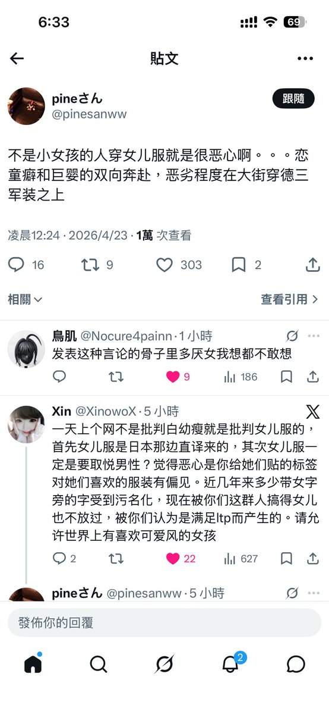

輝く少年
@Ahalfhediboy
@kitty068_ly 其实大部分男的自己也想白+瘦 因为练肌肉也很吃天赋。。。但是很多男的都是大专or高中 他们对世界的认知不够 但是他们有的是时间 可以去骂人LOL

易子而食
@kitty068_ly
照这样不是jk的人也不能穿jk制服都是在诱导了 我想说这种只露小臂和小腿的衣服其实没啥好太苛责的 只是加了刺绣花纹的普通版型和好几年前的软妹风本质差不多 https://t.co/5RbVA4iM9F